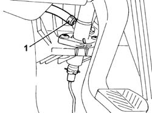
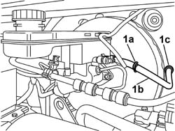

1820B41 HOSE FROM CLUTCH RESERVOIR TO MASTER CYLINDER (PUMP) - R R FOR RH DRIVE VERSIONS
- Path
- Procedures > 18 CLUTCH UNIT > 1820 CLUTCH RELEASE CONTROLS > 1820B HYDRAULIC CLUTCH SYSTEM > 1820B41 HOSE FROM CLUTCH RESERVOIR TO MASTER CYLINDER (PUMP) - R R FOR RH DRIVE VERSIONS
- Kind
- repair procedure (removal / refitting; the operation number is the code)
- Applies to
- all engines; all production periods
- Interactive page
- https://sloeber94.github.io/elrnDB-fDct/en/#/244001014
Applies to: all engines; all production periods
 Removing
Removing
 Refitting
Refitting- Disconnect the negative battery lead.
 | Description | Connector |
|---|---|---|
. | Battery | A001B |
Op. 1016A10 SOUND-PROOFING COVER - R + R
- Remove the protective cap from the bleed valve on one of the front brake calipers.
- Connect the recovery device (pipe and reservoir) to the brake caliper bleed valve.
- Operate the brake pedal until the brake/clutch reservoir is drained.
- Proceed from the inside of the passenger compartment.
1. Disconnect the pipe to the brake/clutch fluid reservoir.

Applies to: all engines; all production periods
1. Open the band (1a), disconnect the pipe (1b) and extract it through the opening (1c) in the bodyshell in the engine compartment.

Applies to: all engines; all production periods
Refitting
Removing- Introduce the flexible pipe via the opening in the bodyshell in the engine compartment.
- Connect the pipe to the brake-clutch fluid reservoir and close it using the band.
- Proceed from the inside of the passenger compartment.
- Connect the pipe to the operating cylinder on the clutch pedal.
Op. 0010T67 HYDRAULIC CLUTCH SYSTEM BLEED AIR
Op. 1016A10 SOUND-PROOFING COVER - R + R
- Connect the negative battery lead.
| Description | Connector |
|---|---|---|
. | Battery | A001B |